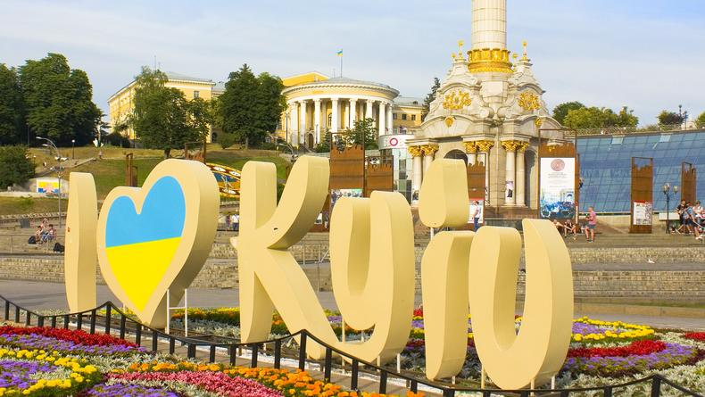

Kyiv — The Heart of Ukraine

Kyiv is the capital of Ukraine and one of the oldest cities in Eastern Europe. Its history spans more than 1,500 years. The city is located on the banks of the majestic Dnipro River and is considered the cultural, scientific, and economic center of the country.
Kyiv is famous for its architecture, including the Golden Gate, the Saint Sophia Cathedral, the Kyiv Pechersk Lavra, and St. Andrew's Church. Its historic streets, parks, museums, and theaters make the city an attractive destination for tourists from all over the world.
Modern Kyiv is a unique combination of rich history and dynamic development. It is home to universities, business centers, art galleries, and cozy cafés. The city has a vibrant atmosphere while preserving its traditions and unique character.
Kyiv is more than just a city—it is a symbol of Ukraine's independence, dignity, and strength of spirit.
Maecenas lacinia felis nec placerat sollicitudin. Quisque placerat dolor at scelerisque imperdiet. Phasellus tristique felis dolor.
Maecenas elementum in risus sed condimentum. Duis convallis ante ac tempus maximus. Fusce malesuada sed velit ut dictum. Morbi faucibus vitae orci at euismod. Integer auctor augue in erat vehicula, quis fermentum ex finibus.
Mauris pretium elit a dui pulvinar, in ornare sapien euismod. Nullam interdum nisl ante, id feugiat quam euismod commodo. Sed ultrices lectus ut iaculis rhoncus. Aenean non dignissim justo, at fermentum turpis. Sed molestie, ligula ut molestie ultrices, tellus ligula viverra neque, malesuada consectetur diam sapien volutpat risus. Quisque eget tortor lobortis, facilisis metus eu, elementum est. Nunc sit amet erat quis ex convallis suscipit. ur ridiculus mus.